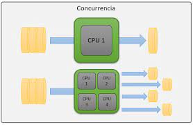
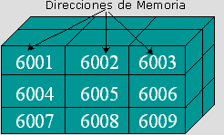
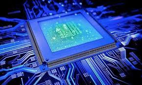

4.1 Aspectos Básicos de la Computación Paralela
La computación paralela es una forma de cómputo en la que muchas instrucciones se ejecutan simultáneamente, operando sobre el principio de que problemas grandes, a menudo se pueden dividir en unos más pequeños, que luego son resueltos simultáneamente (en paralelo). Hay varias formas diferentes de computación paralela: paralelismo a nivel de bit, paralelismo a nivel de instrucción, paralelismo de datos y paralelismo de tareas. El paralelismo se ha empleado durante muchos años, sobre todo en la computación de altas prestaciones, pero el interés en ella ha crecido últimamente debido a las limitaciones físicas que impiden el aumento de la frecuencia. Como el consumo de energía y por consiguiente la generación de calor de las computadoras constituye una preocupación en los últimos años, la computación en paralelo se ha convertido en el paradigma dominante en la arquitectura de computadores, principalmente en forma de procesadores multinúcleo.
4.2 Tipos de compútación paralela
Hay varios tipos diferentes de computación paralela: paralelismo a nivel de bit, paralelismo a nivel de instrucción, paralelismo de datos y paralelismo de tareas. El paralelismo se ha empleado durante muchos años, sobre todo en la computación de altas prestaciones, pero el interés en ella ha crecido últimamente debido a las limitaciones físicas que impiden el aumento de la frecuencia. Como el consumo de energía y por consiguiente la generación de calor— de las computadoras constituye una preocupación en los últimos años, la computación en paralelo se ha convertido en el paradigma dominante en la arquitectura de computadores, principalmente en forma de procesadores multinúcleo.

4.2.1 Clasificación
La clasificación de Flynn ha demostrado funcionar bastante bien para la tipificación de sistemas, y se ha venido usando desde décadas por la mayoría de los arquitectos de computadores. Sin embargo, los avances en tecnología y diferentes topologías, han llevado a sistemas que no son tan fáciles de clasificar dentro de los 4 tipos de Flynn. Por ejemplo, los procesadores vectoriales no encajan adecuadamente en esta clasificación, ni tampoco las arquitecturas hibridas. Para solucionar esto se han propuesto otras clasificaciones, donde los tipos SIMD y MIMD de Flynn se suelen conservar, pero que sin duda no han tenido el éxito de la de Flynn.
4.2.2 Arquitectura de computadoras secuenciales
Probablemente la clasificación más popular de computadores sea la clasificación de Flynn. Esta taxónoma de las arquitecturas está basada en la clasificación atendiendo al flujo de datos e instrucciones en un sistema. Un flujo de instrucciones es el conjunto de instrucciones secuenciales que son ejecutadas por un único procesador, y un flujo de datos es el flujo secuencial de datos requeridos por el flujo de instrucciones. Con estas consideraciones, Flynn clasifica los sistemas en cuatro categorías:
SISD (Single Instruction stream, Single Data stream) Flujo único de instrucciones y flujo único de datos. Este el concepto de arquitectura serie de Von Neumann donde, en cualquier momento, sólo se está ejecutando una única instrucción. A menudo a los SISD se les conoce como computadores serie escalares. Todas las maquinas SISD poseen un registro simple que se llama contador de programa que asegura la ejecución en serie del programa. Conforme se van leyendo las instrucciones de la memoria, el contador de programa se actualiza para que apunte a la siguiente instrucción a procesar en serie. Prácticamente ningún computador puramente SISD se fabrica hoy en día ya que la mayoría de procesadores modernos incorporan algún grado de paralelizacion como es la segmentación de instrucciones o la posibilidad de lanzar dos instrucciones a un tiempo (superescalares).
Multiple Instruction, Single Data (MISD) Hay múltiples elementos de procesamiento, en el que cada cual tiene memoria privada del programa, pero se tiene acceso común a una memoria global de información. En cada paso, cada elemento de procesamiento de obtiene la misma información de la memoria y carga una instrucción de la memoria privada del programa. Este modelo es muy restrictivo y no se ha usado en ningún computador de tipo comercial.
Single Instruction, Multiple Data (SIMD) Hay múltiples elementos de procesamiento, en el que cada cual tiene acceso privado a la memoria de información (compartida o distribuida). Sin embargo, hay una sola memoria de programa, desde la cual una unidad de procesamiento especial obtiene y despacha instrucciones. En cada paso, cada unidad de procesamiento obtiene la misma instrucción y carga desde su memoria privada un elemento de información y ejecuta esta instrucción en dicho elemento. Para aplicaciones con un grado significante de paralelismo de información, este acercamiento puede ser muy eficiente.
Multiple Instruction, Multiple Data (MIMD) Hay múltiples unidades de procesamiento, en la cual cada una tiene tanto instrucciones como información separada. Cada elemento ejecuta una instrucción distinta en un elemento de información distinto. Los elementos de proceso trabajan asíncronamente. Los clusters son ejemplo son ejemplos del modelo MIMD.
4.2.3 Organización de direcciones de memoria
La memoria de acceso secuencial son memorias en la cuales para acceder a un registro en particular se tienen que leer registro por registro desde el inicio hasta alcanzar el registro particular que contiene el dato que se requiere. Estas memorias se clasifican en: Registros de desplazamiento Dispositivos por acoplamiento por carga Memorias de burbuja

4.3 Sistemas de memoria (compartida)
Un multiprocesador puede verse como un computador paralelo compuesto por varios procesadores interconectados que comparten un mismo sistema de memoria. Los sistemas multiprocesadores son arquitecturas MIMD con memoria compartida. Tienen un único espacio de direcciones para todos los procesadores y los mecanismos de comunicación se basan en el paso de mensajes desde el punto de vista del programador.
Multiproceso es tradicionalmente conocido como el uso de múltiples procesos concurrentes en un sistema en lugar de un único proceso en un instante determinado. Como la multitarea que permite a múltiples procesos compartir una única CPU, múltiples CPUs pueden ser utilizados para ejecutar múltiples hilos dentro de un único proceso. El multiproceso para tareas generales es, a menudo, bastante difícil de conseguir debido a que puede haber varios programas manejando datos internos (conocido como estado o contexto) a la vez.
4.3.1 Redes de interconexión dinámica (indirecta). Medio compartido. Conmutadas
Medio compartido. Conexión por bus compartido. Es la organización más común en los computadores personales y servidores. El bus consta de líneas de dirección, datos y control para implementar: El protocolo de transferencias de datos con la memoria. El arbitraje del acceso al bus cuando más de un procesador compite por utilizarlo. Los procesadores utilizan cachés locales para: Reducir el tiempo medio de acceso a memoria, como en un monoprocesador. Disminuir la utilización del bus compartido.
4.4 Sistemas de memoria distribuida
Los sistemas de memoria distribuida o multicomputadores pueden ser de dos tipos básicos. El primer de ellos consta de un único computador con múltiples CPUs comunicadas por un bus de datos mientras que en el segundo se utilizan múltiples computadores, cada uno con su propio procesador, enlazados por una red de interconexión más o menos rápida. Sobre los sistemas de multicomputadores de memoria distribuida, se simula memorias compartidas. Se usan los mecanismos de comunicación y sincronización de sistemas multiprocesadores. Un clúster es un tipo de arquitectura paralela distribuida que consiste de un conjunto de computadores independientes interconectados operando de forma conjunta como único recurso computacional sin embargo, cada computador puede utilizarse de forma independiente o separada. En esta arquitectura, el computador paralelo es esencialmente una colección de procesadores secuenciales, cada uno con su propia memoria local, que pueden trabajar conjuntamente. Cada nodo tiene rápido acceso a su propia memoria y acceso a la memoria de otros nodos mediante una red de comunicaciones, habitualmente una red de comunicaciones de alta velocidad. Los datos son intercambiados entre los nodos como mensajes a través de la red. Una red de ordenadores, especialmente si disponen de una interconexión de alta velocidad, puede ser vista como un multicomputador de memoria distribuida y como tal ser utilizada para resolver problemas mediante computación paralela.
4.4.1 Redes de interconexión estáticas
Las redes estáticas emplean enlaces directos fijos entre los nodos. Estos enlaces, una vez fabricado el sistema son difíciles de cambiar, por lo que la escalabilidad de estas topologías es baja. Las redes estáticas pueden utilizarse con eficiencia en los sistemas en que pueden predecirse el tipo de tráfico de comunicaciones entre sus procesadores. Clases de redes de interconexión: Formación lineal: Se trata de una red unidimensional en que los nodos se conectan cada uno con el siguiente mediante N-1 enlaces formando una línea. Mallas y toros: Esta red de interconexión es muy utilizada en la práctica. Las redes en toro son mallas en que sus filas y columnas tienen conexiones en anillo, esto contribuye a disminuir su diámetro. Esta pequeña modificación permite convertir a las mallas en estructuras simétricas y además reduce su diámetro a la mitad.
4.5 Casos para estudio
Por numerosos motivos, el procesamiento distribuido se ha convertido en un área de gran importancia e interés dentro de la Ciencia de la Computación, produciendo profundas transformaciones en las líneas de I/D. Interesa realizar investigación en la especificación, transformación, optimización y evaluación de algoritmos distribuidos y paralelos. Esto incluye el diseño y desarrollo de sistemas paralelos, la transformación de algoritmos secuenciales en paralelos, y las métricas de evaluación de performance sobre distintas plataformas de soporte (hardware y software). Más allá de las mejoras constantes en las arquitecturas físicas de soporte, uno de los mayores desafíos se centra en cómo aprovechar al máximo la potencia de las mismas.

Interesa realizar investigación en la especificación, transformación, optimización y evaluación de algoritmos distribuidos y paralelos. Esto incluye el diseño y desarrollo de sistemas paralelos, la transformación de algoritmos secuenciales en paralelos, y las métricas de evaluación de performance sobre distintas plataformas de soporte (hardware y software). Más allá de las mejoras constantes en las arquitecturas físicas de soporte, uno de los mayores desafíos se centra en cómo aprovechar al máximo la potencia de las mismas.
Líneas De Investigación Y Desarrollo Paralelización de algoritmos secuenciales. Diseño y optimización de algoritmos. Arquitecturas multicore y multithreading en multicore. Arquitecturas multiprocesador.
Modelos de representación y predicción de performance de algoritmos paralelos. Mapping y scheduling de aplicaciones paralelas sobre distintas arquitecturas multiprocesador. Métricas del paralelismo. Speedup, eficiencia, rendimiento, granularidad, superlinealidad. Balance de carga estático y dinámico. Técnicas de balanceo de carga. Análisis de los problemas de migración y asignación óptima de procesos y datos a procesadores. Migración dinámica. Patrones de diseño de algoritmos paralelos. Escalabilidad de algoritmos paralelos en arquitecturas multiprocesador distribuidas. Implementación de soluciones sobre diferentes modelos de arquitectura homogéneas y heterogéneas (multicores, clusters, multiclusters y grid). Ajuste del modelo de software al modelo de hardware, a fin de optimizar el sistema paralelo. Evaluación de performance. Laboratorios remotos para el acceso transparente a recursos de cómputo paralelo.